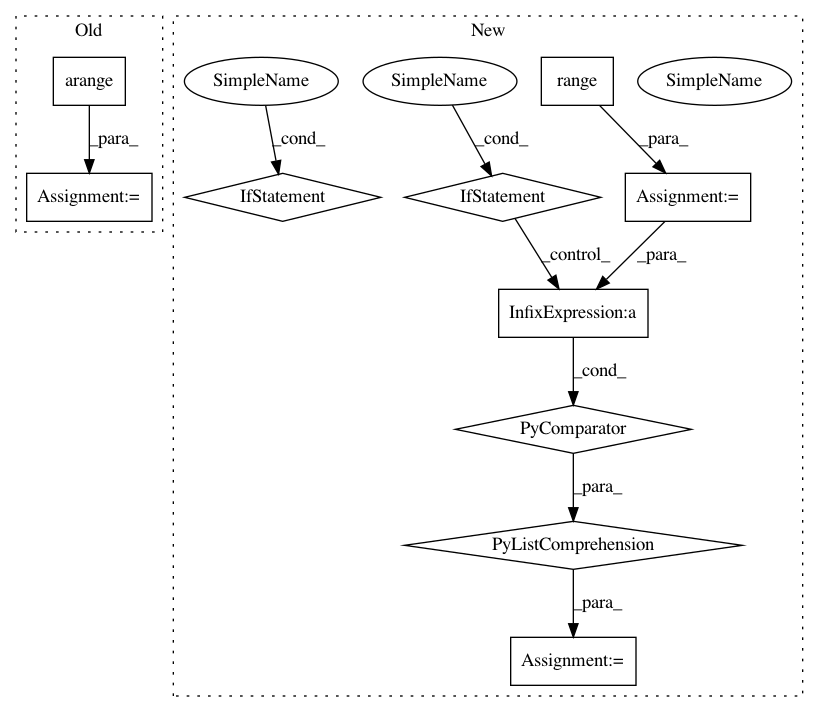

d1d2aa202803dada164cb378a4485fbba59f9e76,pymc3/distributions/timeseries.py,AR,logp,#AR#Any#,113
Before Change
def logp(self, value):
y = value[self.p:]
results, _ = scan(lambda l, obs, p: obs[p - l:-l],
outputs_info=None, sequences=[tt.arange(1, self.p + 1)],
non_sequences=[value, self.p])
x = tt.stack(results)
if self.constant:
y = y - self.rho[0]
After Change
def logp(self, value):
if self.constant:
x = tt.add(*[self.rho[i + 1] * value[self.p - (i + 1):-(i + 1)] for i in range(self.p)])
eps = value[self.p:] - self.rho[0] - x
else:
x = tt.add(*[self.rho[i] * value[self.p - (i + 1):-(i + 1)] for i in range(self.p)])
eps = value[self.p:] - x
innov_like = Normal.dist(mu=0.0, tau=self.tau).logp(eps)
In pattern: SUPERPATTERN
Frequency: 3
Non-data size: 10
Instances
Project Name: pymc-devs/pymc3
Commit Name: d1d2aa202803dada164cb378a4485fbba59f9e76
Time: 2018-07-01
Author: junpeng.lao@unifr.ch
File Name: pymc3/distributions/timeseries.py
Class Name: AR
Method Name: logp
Project Name: pymc-devs/pymc3
Commit Name: d1d2aa202803dada164cb378a4485fbba59f9e76
Time: 2018-07-01
Author: junpeng.lao@unifr.ch
File Name: pymc3/distributions/timeseries.py
Class Name: AR
Method Name: logp
Project Name: openai/gym
Commit Name: e84bd0ffe1f98efca057dde34244a82fa6486090
Time: 2016-10-21
Author: colin.morris2@gmail.com
File Name: gym/envs/algorithmic/algorithmic_env.py
Class Name: AlgorithmicEnv
Method Name: __init__
Project Name: analysiscenter/batchflow
Commit Name: cc07095b2f72ff3ba5e5d76900ff17111cf9f177
Time: 2019-07-29
Author: 7520522+a-arefina@users.noreply.github.com
File Name: batchflow/models/tf/unet.py
Class Name: UNet
Method Name: build_config